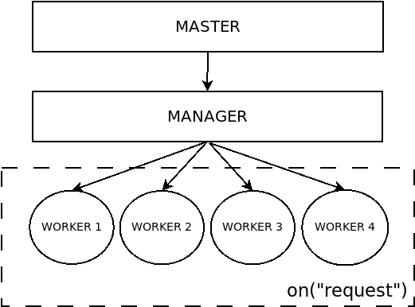

Reference
In This Article
How it works
When you run an Expressive application using Swoole, you will execute PHP from the command line interface, without using a web server.
This sounds a bit strange in PHP, though it will be familiar to Node.js developers; the execution model under Swoole is similar to that technology.
The HTTP server of Swoole is a PHP class that offers callbacks on a number of events,
using the on(string $name, callable $action) method.
The request handler implemented in zend-expressive-swoole is a runner that
enables the execution of an Expressive application inside the on('request')
event of Swoole\Http\Server. This runner is implemented in the
Zend\Expressive\Swoole\SwooleRequestHandlerRunner class.
The basic implementation acts similar to the following:
public function run() : void
{
$this->swooleHttpServer->on('start', function ($server) {
printf("Swoole is running at %s:%s\n", $server->host, $server->port);
});
$this->swooleHttpServer->on('request', function ($request, $response) {
printf(
"%s - %s - %s %s\n",
date('Y-m-d H:i:sO', time()),
$request->server['remote_addr'],
$request->server['request_method'],
$request->server['request_uri']
);
$emitter = new SwooleEmitter($response);
try {
$psr7Request = ($this->serverRequestFactory)($request);
} catch (Throwable $e) {
// Error in generating the request
$this->emitMarshalServerRequestException($emitter, $e);
return;
}
$emitter->emit($this->handler->handle($psr7Request));
});
$this->swooleHttpServer->start();
}This package provides a bridge between Swoole\Http\Request ($request) and
PSR-7 requests ($psr7Request;
specifically as implemented by zend-diactoros)
via the class Zend\Expressive\Swoole\ServerRequestSwooleFactory.
It also provides a Swoole-specific emitter, Zend\Expressive\Swoole\SwooleEmitter,
that converts a PSR-7 response to a Swoole\Http\Response instance.
When you run an Expressive application using zend-expressive-swoole, you will notice a bunch of PHP processes running. By default, Swoole executes 4 worker (or reactor) processes and 1 master process, for a total of 5 PHP processes.

The advantages of this architecture are many: it's very light and simple (just PHP processes running); it offers a service layer that is able to restart a worker automatically if it's not responding; and it allows executing multiple HTTP requests in parallel. The architecture is built for scaling.
Performance
The ZF developers performed a benchmark running the default zend-expressive-skeleton application with Swoole 4.0.1, nginx 1.12.1, and Apache 2.4.27 (with mod_php) using PHP 7.2.7.
The results demonstrated that Expressive with Swoole runs 4 to 5 times faster than nginx or Apache.
This impressive result is primarily due to the shared memory approach of Swoole. Unlike traditional apache/php-fpm usage, the memory allocated in Swoole will not be freed after a request. This allows application configuration and artifacts (such as middleware and handlers) to persist between requests and processes.
Under Swoole 4.1+, for even better performance, you can enable the option
zend-expressive-swoole.enable_coroutine. When this
is enabled, Swoole will run most I/O processes in coroutines. Doing so provides
approximately 10 times faster performance than without coroutines, meaning a
Swoole-based application can be 40 to 50 times faster than running under nginx
or Apache. Performance improves with the number of workers (which are restricted
by the amount of memory); as such, performance can increase from these numbers.
Found a mistake or want to contribute to the documentation? Edit this page on GitHub!